In this project, we compare the quality and degree of various speedups on our project 3-1 raytracer. In particular, we looked at 2 types of algorithmic accelerations and hardware acceleration. Drawing inspiration from radiance caching and ray packets, we developed a novel algorithm to group similar ray packets together and to interpolate values which hit the same primitive. We also compared this to to a BVH speedup which uses expected cost according to the surface area of the primitives in the BVH. Finally, we implemented hardware acceleration using a prewritten, similar procedure in OptiX, an NVIDIA GPU ray tracing engine, and we imported our scenes to compare runtimes. We observed that simple scenes ran slower on the GPU than for our vanilla CPU and spedup implementations, which we attribute to the overhead cost of running the GPU. Meanwhile, for more complex scenes with high amounts of primitives, we saw the GPU scene ran far more quickly. Between the algorithmic accelerations, we saw very similar runtimes for most scenes and varying degrees of speedup, indiciating that these speedups can be scene-dependent.
Throughout our project, we chose to test all of our implementations on the hive cluster in order to provide a consistent amount of computing power for a fair comparison of our speedups. The hive has the Intel i7-4770 CPU and the NVIDIA Quadro P620 GPU.
Our intial approach to Speeding Up the Ray Tracer was to implement the concepts of Ray Packets and Radiance Caching onto the Project 3-1 Code. The main principle that Ray Packet Tracing tries to leverage is that many rays hit the same primitive, and originate from similar points. Because they share many similar values with small variances, there is a potential to speedup ray tracing by reusing calculations. The main idea behind Radiance Caching is similar in that Radiance does not need to be explicitly calculated at every point. Instead, the radiance is calculated at key points, and all values in between are evaluated via interpolating between these cached radiances.
The papers initially sounded simple from a high-level, but we found them to be very complex, and proved themselves to be very difficult to implement directly onto the project 3-1 code. Some had very challenging math, such as hemispherical harmonics, that would be very slow if implemented naively in C++ and there were discrepencies between the the project's ray tracing pipeline, and the pipeline assumed in the papers.
Because of these difficulties, we instead opted to naively implement a fusion of these algorithms onto the project 3-1 code, based on the main ideas of each paper. In essence, we form a "packet" of rays of length n, spanning from x, to x+n, check if the rays at x and x+n hit the same primitive, calculate the radiance at those points, and then interpolate the values in between. If the ray packets do not hit the same primitive, then we calculate radiance at those points individually like usual.
Beyond sampling and interpolation improvements, we also optimize the Bounding Volume Hierarchy, one of the most popular data structures used for testing intersections in ray tracing. We began from our naive project 3-1 implementation, which simply picked the longest axis and partitioned primitives based on the centroid coordinate of the bounding box along this axis. As described in Lecture 10 and as seen in some related packet tracing literature, we can estimate node cost using the surface area heuristic (SAH). This heuristic states that the probability of intersection with a bounding box or primitive is roughly proportional to the object's surface area. Based on this heuristic, one can that the following estimated cost function for a given node splitting into two nodes S1 and S2, where A(S) and N(S) and are surface area and number of primitives respectively:
|
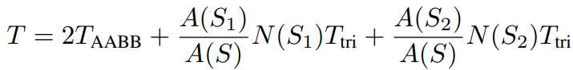
|
This simply adds the cost of checking bounding box intersections to the expected cost of checking triangle intersections assuming the surface area heuristic. Note this is equivalent to optimizing is A(S1)*N(S1) + A(S2)*N(S2).
To optimize this cost, for each axis we sort by axis coordinate, calculate and cache areas of the right-most halves in linear time, and then iterate along the axis to update our best cost and corresponding best axis and split point.
|
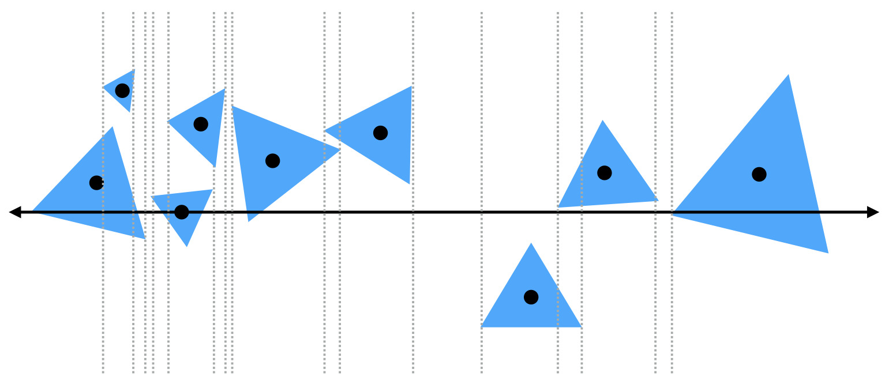
|
After iterating over all axes and split points, we partition along the best axis by the desired split point and construct the desired new nodes.
When we started researching algorithmic accelerations, we were initially overwhelmed by the fact that there was no simple way to port our existing 3-1 project into CUDA. Luckily, after additional research, we found OptiX, a NVIDIA API which allows for simple modification to a pre-built acceleration pipeline. OptiX came including a simple ray-tracing program already present in the SDK which we found was very similar in implementation to our project 3-1, allowing for comparison between the two.
However, the installation of OptiX also came with its fair share of trouble. Since we were running on the hive, we were unable to use a display directly when generating our results. OptiX tried to access the DISPLAY environment variable upon initialization, leading to the program erroring. We toyed with the idea of using X11 forwarding and installing a different program to share screen with the hive, but found these methods either unsuccessful or required sudo commands which we didn't have access to. Fortunately, since we are only comparing the speed of our image generation process, we instead used flags to disable GL interoperability (which requires the display) and output our results to a file instead of the display.
Since we could use the pre-existing raytracing code in the OptiX sample, next we had to figure out a way to take scenes from project 3-1 and input them into our pipeline. The OptiX raytracing code only included a hardcoded scene of two blocks within a Cornell box, so there was no simple way to input our complex meshes and scenes from 3-1 into the pipeline.
|
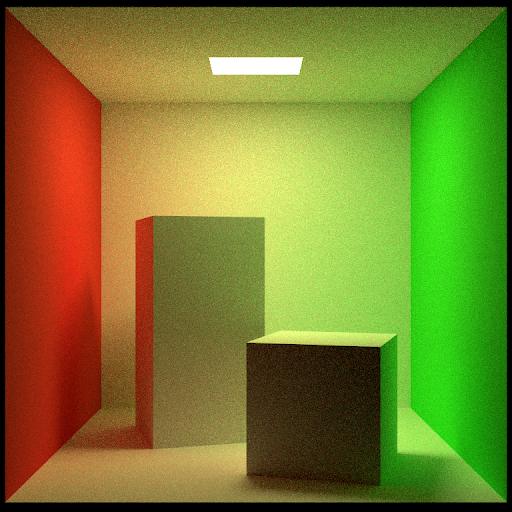
|
The first method we tried was to convert the file from dae format into gltf format using the native converter developed by Khronos Group. Gltf is open-sourced, well-documented, and has official convertor. Also, the Optix framework supports importing gltf format files directly into the scenes, so we thought this approach would be a good choice.
To import the triangle meshes, we need to first understand the optix pipeline, specifically how mesh data was imported and loaded from the CPU memory to the GPU memory. We also need to understand how gltf format works and the format the pre-existing raytracing code needs in the GPU memory pool. We cloned the converter into our accounts on the instructional machines, converted the files, and loaded the gltf files into the CPU memory. However, when we tried to convert the mesh data into the format needed for the pre-existing raytracing code in GPU memory, we encountered some problems we were unable to solve.
Specifically, the mesh format in GPU requires 8-byte alignment, but the 3 coordinates(x, y, and z) in float type have only 12 bytes(one float variable is 4 bytes), so we had to give each vertex a 4-byte padding. However, in order to do this, we had to modify the mesh loader, because the mesh loader loads mesh data without a 4-byte padding between each vertex. Although gltf format is open sourced and well-documented, the specification is extremely complicated. It separates the structural information of the scene from the actual data, and the scene is also defined recursively. Also, the loader loaded mesh data into the CPU memory only as an intermediated form, which is defined by the loader itself and does not have any written specification. As a result, it became much too complicated to modify the loader, as the time for modifying the loader would be more than enough to implement new rendering algorithms.
|
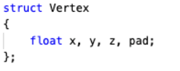
|
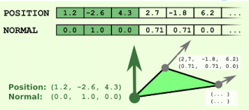
|
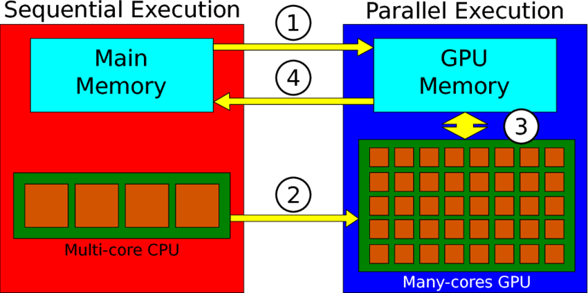
|
After discovering .gltf was too complex to easily parse, we decided to look for a simpler method that we could implement ourselves. The optixPathTracer.cpp code provided in the OptiX SDK used a hardcoded scene of two rectangular prisms in a Cornell Box. This is implemented using a hardcoded list of vertices grouped as faces with associated materials, which have emission and diffuse colors. As a result, if we were to input the vertices from our 3-1 scenes to this list of vertices, we replicate the scene almost exactly and compare the times.
To do this, we converted the .dae files into .obj, which we found to be an easier format to work with. The .obj files were in a similar format as the optixPathTracer code: the mesh was given as a list of vertices, then with a list of faces with three vertex references. Since implementing more complex materials would require an overhauling of the existing code, we decided to compare speedups on simpler, diffuse scenes. In particular, we used the bunny scene and dragon scene as examples of a relatively simple and complex scene.
Notably, these meshes are directly inputted in normalized coodinates from -1 to 1. Hence, we had to manually define a transformation to make the points resemble the 3-1 scene as closely as possible. Although this required some minor tinkering, it was relatively simple to execute after a bit of trial and error. However, this did lead to some funny intermediate images, one of which is shown below.
|
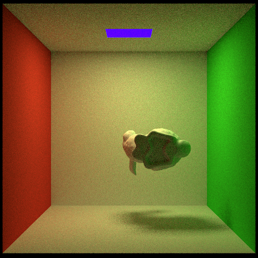
|
We implemented a file parser that allows inputting of .obj files using the -m flag. The program reads in the file and reads in each vertex and face in the file. Then it adds these faces to the list of vertices in the optix code. Finally, we set the material of each mesh to be diffuse and white to match the original scene. This gave us the following very similar results:
|
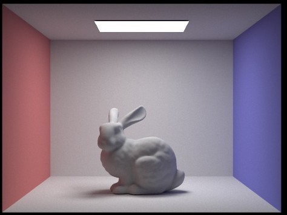
|
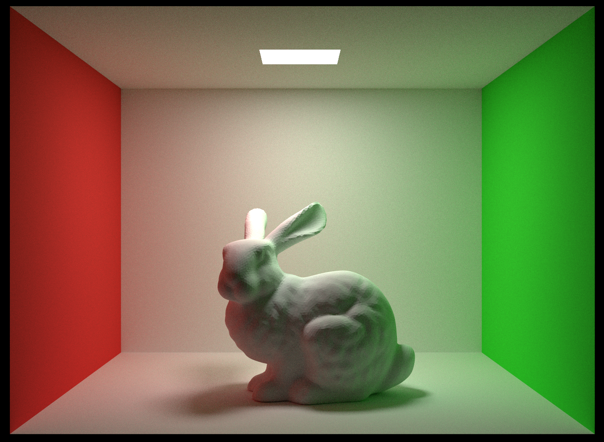
|
|
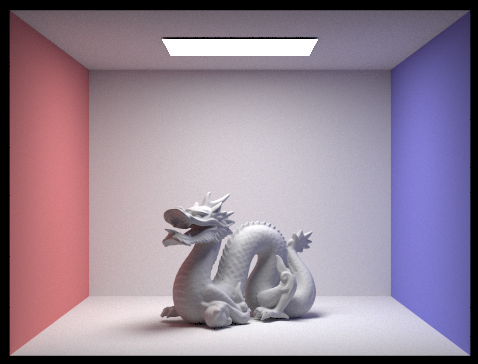
|
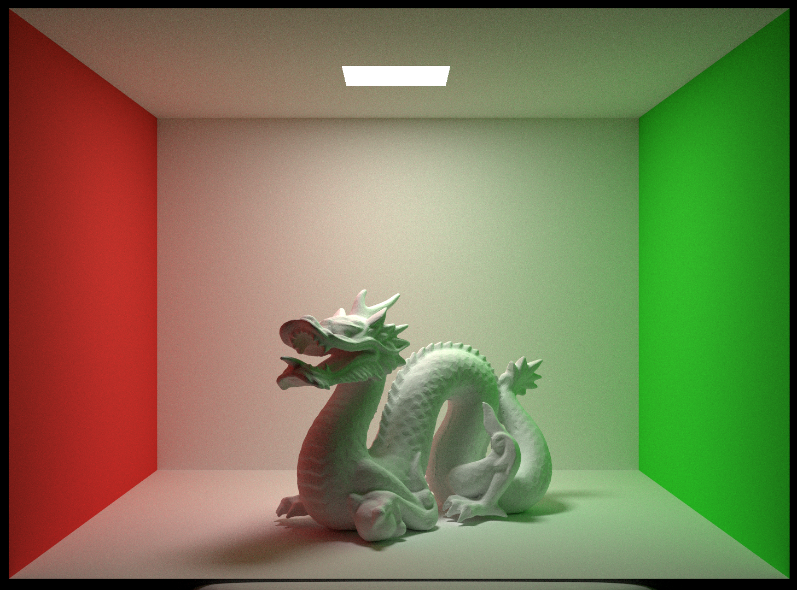
|
As for results, we found a speedup of about 2x-3x depending as the length of each packet increased from 1 (normal ray tracing) to 4 and 8. However, as packet size increases, more visual artifacting occured such as rough edges, and a grid like pattern.
|
|
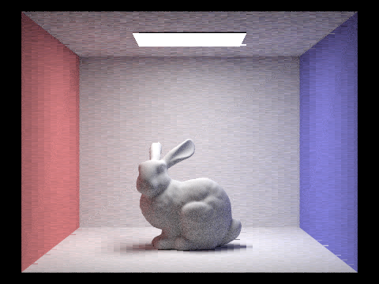
|
The specifics of the exact speedup results are given in the following table:
| Packet Length | Runtime (s) | Speedup |
|---|---|---|
| 1 (Normal) | 149.7965 | 1 |
| 4 | 77.2479 | 1.94 |
| 8 | 56.4526 | 2.65 |
Clearly, we see marked speedup in our scene as we increase packet length. However, this comes at the cost of render quality, as increasing packet length leads to greater and greater amounts of visual artifacts.
BVH performance improvements over the naive project 3-1 implementation on the lambertian spheres scene are shown below for a few samples per pixel and max ray depth settings.
| Samples | Max Ray Depth | Project 3-1 | SAH | Speedup |
|---|---|---|---|---|
| 8 | 16 | 10.50 | 7.55 | 1.39 |
| 32 | 8 | 41.00 | 29.58 | 1.39 |
| 128 | 3 | 127.62 | 90.78 | 1.41 |
| 512 | 64 | 563.85 | 402.51 | 1.40 |
For this scene, we observed a consistent speedup of around 40% across all sample and max ray depth settings that we tested. The improvements shown later on rabbit and dragon scenes are more modest. Nevertheless, though speedup from the surface area heuristic cost is modest for certain scenes, it makes few assumptions about scenes themselves and preserves render quality while almost always improving performance.
When observing our results for hardware acceleration, we wanted to make our CPU and GPU implementations as similar as possible. As a result, since the OptiX code did not use Russian Roulette or adaptive sampling, we chose to remove those features from the project 3-1 code so as to compare the hardware differences more directly. Here are the graphs of our results:
|
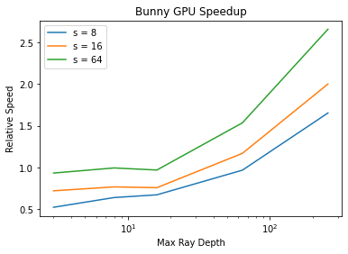
|
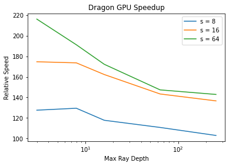
|
The graph here gives the relative speed of the GPU implementation compared to the CPU implementation for varying images, samples per pixel, and max ray depths. In terms of raw numbers, for the bunny file the shorter runs on fewer samples and ray depths took around ~1 second while the longer runs took up to 45 seconds. Meanwhile, the dragon scene took 245 seconds for the shortest run and upwards of 4000 seconds for the longest run. We observe a clear trend, that the GPU implementation is actually slower for simpler scenes with less computation required. For instance, on 3 and 8 max ray depths for the bunny scene we observe the GPU implementation is slower than the CPU implementation. However, as the max ray depth and samples increases, the GPU becomes faster and faster in comparison to the CPU. This is because of the high overhead of using parallel computing with the GPU leading to less and less of a relative cost as we increase the amount of total compute required.
Meanwhile, the dragon scene renders at least 100 times faster for all settings and upwards of ~220 times at most. This is because the dragon scene is more complex and requires additional intersection calculations due to the sheer volume of triangles present in the mesh. However, we observe an interesting trend, which is that the relative speedup decreases as max ray depth increases for the dragon scene. We were somewhat confused by why this might occur, but one possible explanation is that for this scene many rays leave the box as the max ray depth increases and the rays are no longer contributing to the scene. Then when this happens, we thought this may be relatively harder for the GPU to compute since the GPU is generally not as good at handling branching logic compared to the CPU.
Here, we analyze and compare performance of our different speedup methods as a function of samples per pixel, max ray depth, and samples per light. We also combined the packets and BVH speedups to create an "All CPU" method.
Fixing the max ray depth at 64, we vary the samples/pixel and observed the runtimes below:
|
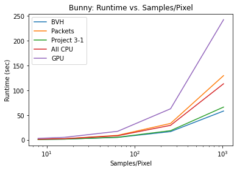
|
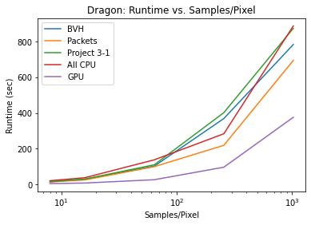
|
For the bunny output, we see that the GPU implementation runs slower for all levels. This differs from our previous results (GPU vs CPU direct comparison) since these CPU implementations include Russian Roulette and adaptive sampling. We attribute this to the high overhead cost of running the GPU. Since this scene is quite simple, it seems natural that the overhead cost dominates the performance of the GPU implementation. On the other hand, the dragon scene is significantly faster for all levels, and even seems to follow a different asymptotic curve. Once again, this confirms to us that the GPU is generally better at more complex scenes with additional computation required, while the CPU scenes excel at quicker and shorter computations.
Comparing the CPU methods among each other reveals varying results. The packets method and combined methods proved to be worse than the vanilla implementation for bunny but better for dragon at higher samples/pixel, indicating that like the GPU, this is scene dependent and improves with scene complexity and computation requirements. On the other hand, the BVH implementation seemed to be a consistent speedup compared to the vanilla implementation for both scenes. We conclude that the packet method seems to be better for complex scenes while the BVH is helpful regardless of the type of scene.
|
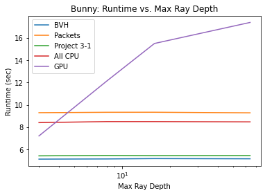
|
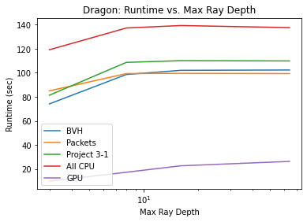
|
For the bunny image, we see that the GPU incurs quite a high fixed cost that increases as the max ray depth, increases, causing it to take significantly longer than the other methods. This illustrates the tendency of the GPU to lag for the easier scenes. In contrast, here the CPU methods seem to incur almost no cost from increasing ray depth and run swiftly. The packets and all CPU methods appear to struggle hear and the BVH speedup does undercut the project 3-1 implementation but only barely, suggesting tha CPU based speedups can be inconsistent.
For the harder dragon scene, we see that the GPU is able to excel, running several times faster than all CPU methods and showing little slowdown as max ray depth increases. The combination of CPU methods again performs slowly, suggesting the methods do not mesh together well. However for this harder scene, the packet and BVH speedups do seem to consistently outperform the project 3-1 implementation. This may mean that the CPU algorithms require reasonably complex scenes to yield results.
We see that most of our runtimes are unchanging even as we vary max ray depth. We considered why this may be the case, and concluded that it likely comes because a majority of rays exit the scene at some low number of bounces, so even as we increase the ray depth the computation required isn't increasing significantly.
Fixing the max ray depth at 64 and samples at 64, we vary the samples per light and observed the runtimes below:
|
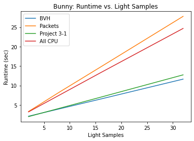
|
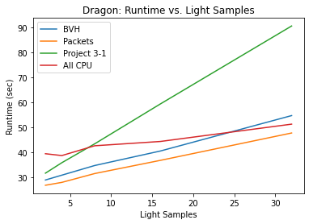
|
We were unable to vary the samples per light for the GPU implementation so here we only compare the CPU implementations. We see little change in the relative runtimes of the algorithms from before, except for the combined method in the dragon scene. It starts off worse than the vanilla implementation, but seems to grow in runtime with significantly lower slope than any of its counterparts. While previously we did not see any particular differences between the combined method and the two individual methods, this shows that combining the methods may lead to an additional multiplicative speedup in the case of varying samples per light. We aren't completely sure why this might be the case, but hypothesize this may be due to variations in a single data point and not be a significant trend.
There are also various sources of error which we should account for when stating our results. The simplest source of error comes from inconsistencies in runtimes between our trials. Since we are measuring runtimes on the hive directly, this statistic can depend on a variety of factors. First of all, we expect random noise simply when running the code, which we tried to combat by averaging runtimes of multiple trials, but we were not always able to do so because some of our images took more than an hour to generate. Furthermore, the efficiency of the hive is also dependent on how many other users are using the system at the current time, which is entirely out of our control. Overall though, we found our results were fairly consistent with what we might expect, indicating that random noise was likely not dominating our outputs.
One large source of error with regards to our GPU and CPU comparison is the fact that the scenes we implemented were not identical. While we tried to combat this by making them as similar as possible, we still were unable to make them exactly the same. In reality, we found that the runtimes of GPU and CPU differed vastly for more complex scenes, so these minor differences between scenes were likely not significantly influencing our results.
Real-time Neural Radiance Caching for Path Tracing: https://arxiv.org/abs/2106.12372
Packet-based Whitted and Distribution Ray Tracing: https://graphics.stanford.edu/~boulos/papers/cook_gi07.pdf
CS184 Spring 2022 Lecture 10: https://cs184.eecs.berkeley.edu/sp22/lecture/10-58/ray-tracing-acceleration
Ray Tracing Deformable Scenes using Dynamic Bounding Volume Hierarchies: https://graphics.stanford.edu/~boulos/papers/togbvh.pdf
Getting Started with OptiX: https://developer.nvidia.com/blog/how-to-get-started-with-optix-7/
Learning About .obj Files: https://all3dp.com/1/obj-file-format-3d-printing-cad/
GLTF loader: https://github.com/KhronosGroup/glTF
We first met together and discussed what we should plan for our project when turning in our project proposal.
Jared and Chet worked together on the CPU algorithms. At first, they met once to skim the algorithm papers and decide which was the most approachable to start reading and implementation. They read the radiance caching paper and found some helpful libraries such as boost for the relevant mathemtical functions but realized that it might be too difficult to implement successfully in a reasonable time frame. They moved to reading the packet sampling literature and found this too be somewhat more approachable but still far from easy. In the end, Jared came up with a simplified algorithm that combined some of the ideas of interpolation from radiance caching and packets from packet tracing. Chet implemented a BVH speedup that he found in lecture and some of the packet tracing papers. He also handled the rendering and benchmarking of CPU implementations for the group's final results.
Zekai and Aaron worked closely together on the hardware acceleration section. Zekai and Aaron both worked together on installation and understanding the OptiX code. After discussing various ways to approach the problem, they tried various methods (Zekai focused on the .gltf method and Aaron focused on the .obj method) but ultimately decided to go with the .obj method. However, throughout this process Zekai and Aaron were frequently sharing their results and giving feedback to one another. Finally, they split the rendering process and regrouped to discuss their results and generate the final speedup graphs.